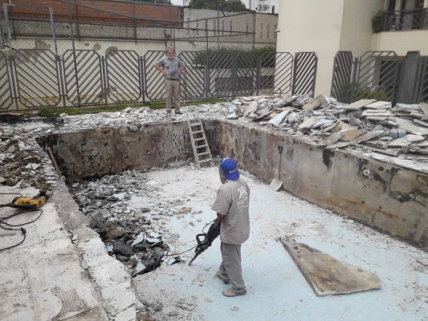
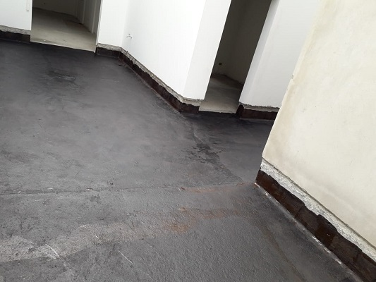
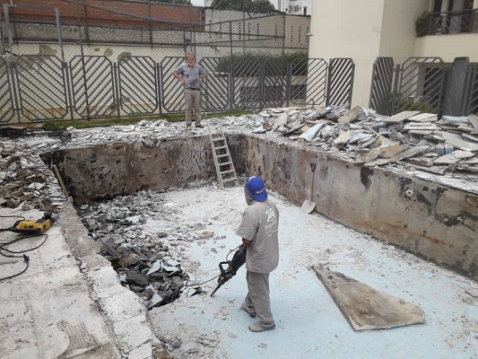
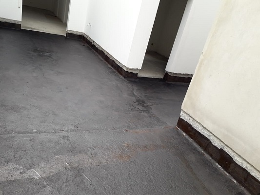

Solução em Impermeabilização
Umidade, mofo e infiltração podem ser um problema para sua obra e danificar seu patrimônio, pensando nisso a IMPERMOURA trabalha com os melhores impermeabilizantes do mercado para proporcionar um serviço de qualidade e com garantia de cinco anos. Saiba mais

 



A IMPERMOURA oferece serviços de impermeabilização em piscinas, lajes, caixa d’ água, telhado, rufos, jardineiras, paredes, pisos, baldrames e infiltração de água.
Peça já seu orçamento!
- Impermeabilização de piscinas
- Impermeabilização de muros
- Impermeabilização de telhados
- Impermeabilização de marquises
- Impermeabilização de caixa d’ água
- Impermeabilização de baldrames
- Impermeabilização de lajes
- Impermeabilização de infiltrações de água
- Impermeabilização de paredes
- Impermeabilização de jardineiras